CSC477 Introduction to Mobile Robotics
Week #4: Discrete Planning in Known Environments
Today’s agenda
- Dijkstra’s Planning Algorithm
- A* Planning Algorithm
- Sampling Based Planners
- Rapidly-exploring Random Trees (RRT)
- Probabilistic Roadmaps (PRM)

Planning
- So far we have been trying to compute state-dependent feedback controllers u(x)= Kx
A plan is usually “open-loop,” in the sense that it is assumed that once computed you can execute it perfectly
This is not realistic because: wind, drag, external forces, friction, unknown factors make the system diverge from the planned trajectory.
- Planning does not usually take external disturbances into account.
(External, independent feedback controllers have to make sure the robot is following the path closely)
Why Bother Planning?
Sense-Plan-Act Paradigm: Planning Is Necessary

Sense-Plan-Act Paradigm: Planning Is Necessary
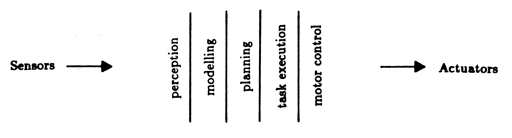
Subsumption Architecture: Planning Is Not Necessary
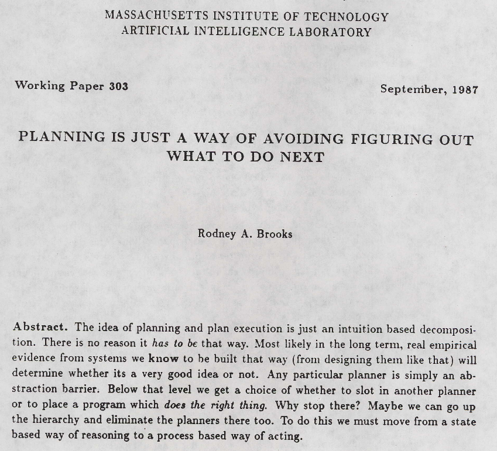Subsumption Architecture: Planning Is Not Necessary
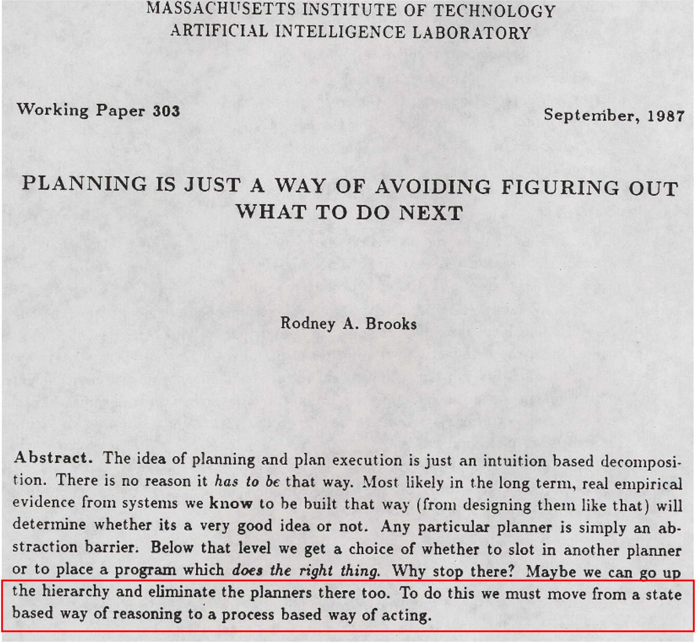He means: why bother
estimating state and planning?
It’s too much work and could be
error-prone. Why not only have
a hierarchy of reactive
behaviors/controllers?
One possibility:
instead of u(state)=…
use u(sensory observation)=…
Subsumption Architecture: Planning Is Not Necessary
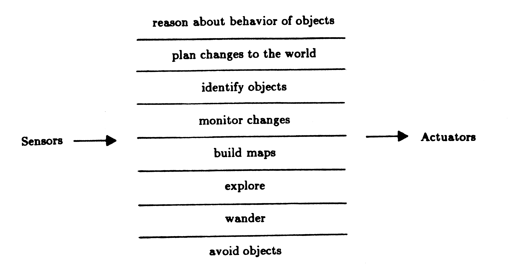Planning as graph search
Graph nodes represent discrete states
Edges represent transitions/actions
Edges have weights
Potential queries:
- Shortest path from node a to node b, that does not hit obstacles
- Is b reachable from a?
- Typical assumptions:
- Current state is known
- Map is known
- Map is mostly static
Dynamic Programming
\[ D(v) = \min_{u \in N(v)} [d(v, u) + D(u)] \]
\[ D(v_{\text{dest}}) = 0 \]
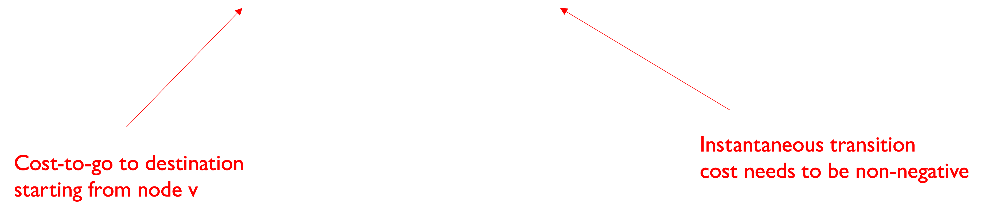
Dynamic Programming
\[ D(v) = \min_{u \in N(v)} [d(v, u) + D(u)] \]
\[ D(v_{\text{dest}}) = 0 \]
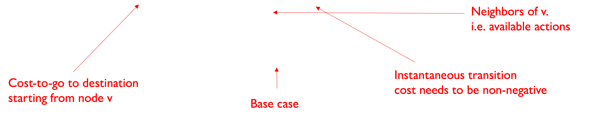
Note: this should remind you
of the LQR cost-to-go update
\[ \begin{align} J_{t+1}(\mathbf{x}) &= \min_{\mathbf{u}} [g(\mathbf{x}_t, \mathbf{u}_t) + J_t(A\mathbf{x} + B\mathbf{u})] \\ J_0(\mathbf{x}) &= \mathbf{x}^T Q\mathbf{x} \end{align} \]
Dynamic Programming
\[ D(v) = \min_{u \in N(v)} [d(v, u) + D(u)] \]
\[ D(v_{\text{dest}}) = 0 \]
Worst-Case
Complexity:
\(O(|V|^2)\)
In 2D grid world
\(O(|V|)\)
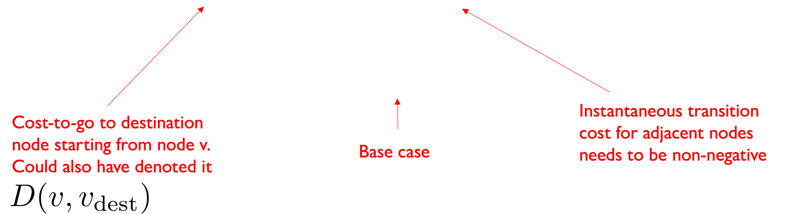
Dijkstra’s algorithm: example runs
Dijkstra’s algorithm
Let \(D(v)\) denote the length of the optimal path from the source node to node \(v\) (i.e. cost-to-come, not cost-to-go like before)
Set \(D(v) = \infty\) for all nodes except the source: \(D(v_{\text{src}}) = 0\)
Add all nodes to priority queue Q with cost-to-come as priority
While Q is not empty:
- Extract the node with minimum cost-to-come from the queue Q
- If found goal then done
- Remove from the queue
The cost-to-come of \(v\) is final at this point. Need to check if we can reduce the cost-to-come of its neighbors.
- For \(u\) in neighborhood of \(v\):
- If \(d(u, v) + D(v) < D(u)\) then
- Update priority \(u\) of in Q to be \(d(u,v) + D(v)\)
- If \(d(u, v) + D(v) < D(u)\) then
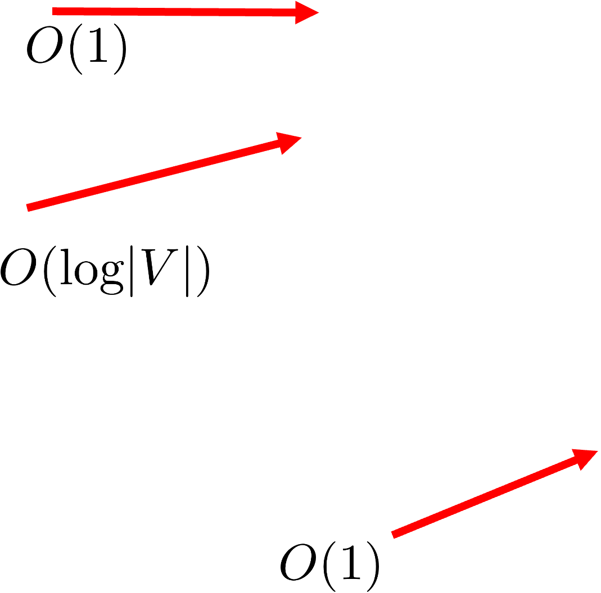
For Fibonacci heaps
\(O(|E|T_{\text{update priority}} + |V|T_{\text{remove min}}) = O(|E| + |V|\log|V|)\)
Dijkstra’s algorithm: example runs
Many nodes are explored
unnecessarily. We are sure that
they are not going to be part of
the solution.
A* Search: Main Idea
Modifies Dijkstra’s algorithm to be more efficient
Expands fewer nodes than Dijkstra’s by using a heuristic
While Dijkstra prioritizes nodes based on cost-to-come
A* prioritizes them based on:
cost-to-come to \(v\) + lower bound on cost-to-go from \(v\) to \(v_{\text{dest}}\)
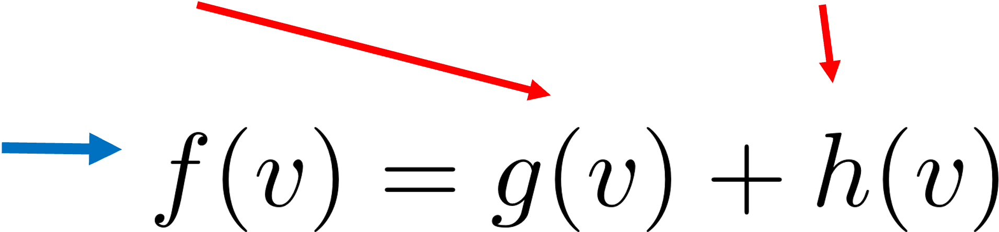
Optimistic search: explore node with smallest f(v) next
Lower bound on
cost of path from
source to destination
that passes through \(v\)
A* Search: Main Idea
Modifies Dijkstra’s algorithm to be more efficient
Expands fewer nodes than Dijkstra’s by using a heuristic
While Dijkstra prioritizes nodes based on cost-to-come
A* prioritizes them based on:
cost-to-come to \(v\) + lower bound on cost-to-go from \(v\) to \(v_{\text{dest}}\)
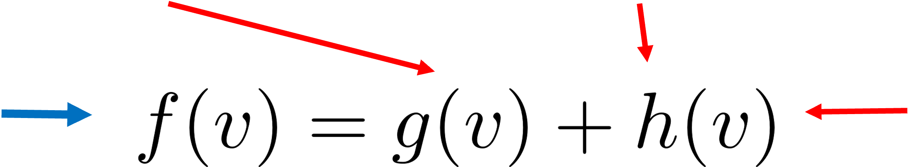
h() is called a heuristic. h() must be admissible, i.e. underestimate the cost-to-go from v to destination. h() must also be monotonic, i.e. satisfy the triangle inequality.
Lower bound on
cost of path from
source to destination
that passes through \(v\)
A* Search
- Set \(g(v) = \infty\) for all nodes except the source: \(g(v_{\text{src}}) = 0\)
- Set \(f(v) = \infty\) for all nodes except the source: \(f(v_{\text{src}}) = h(v_{\text{src}})\)
- Add \(v_{\text{src}}\) to priority queue Q with priority \(f(v_{\text{src}})\)
- While Q is not empty:
- Extract the node \(v\) with minimum \(f(v)\) from the queue Q
- If found goal then done. Follow the parent pointers from \(v\) to get the path.
- Remove \(v\) from the queue Q
- explored(\(v\)) = true
- For \(u\) in neighborhood \(v\) of if not explored(\(u\)):
- If \(u\) not in Q then
- Add u in Q with cost-to-come \(g(u) = g(v) + d(v, u)\) and priority \(f(u) = g(u) + h(u)\)
- Set the parent \(u\) of to be \(v\)
- Else if \(g(v) + d(v, u) < g(u)\)
- Update the cost-to-come and the priority of \(u\) in Q
- Set the parent of \(u\) to be \(v\)
- If \(u\) not in Q then
Dijkstra vs A*
A* for cars
Configuration Space
Idea: dilate obstacles to account for the ways the robot can collide with them.
Why? Instead of planning in the work space and checking whether the robot’s body collides with obstacles, plan in configuration space where you can treat the robot as a point because the obstacles are dilated.
This idea is typically not used for robots with high-dimensional states.
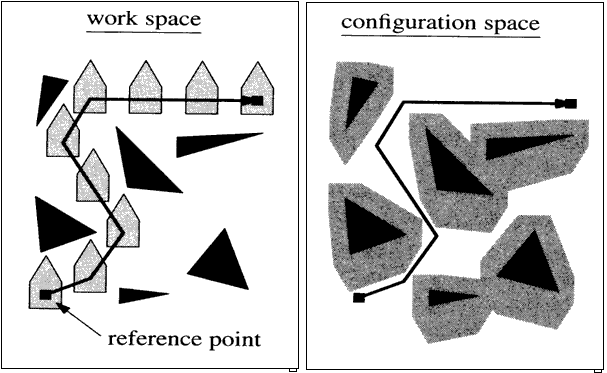
Configuration Space
How do we dilate obstacles?
Minkowski Sum
\(P \oplus Q = \{p + q \mid p \in P, q \in Q\}\)
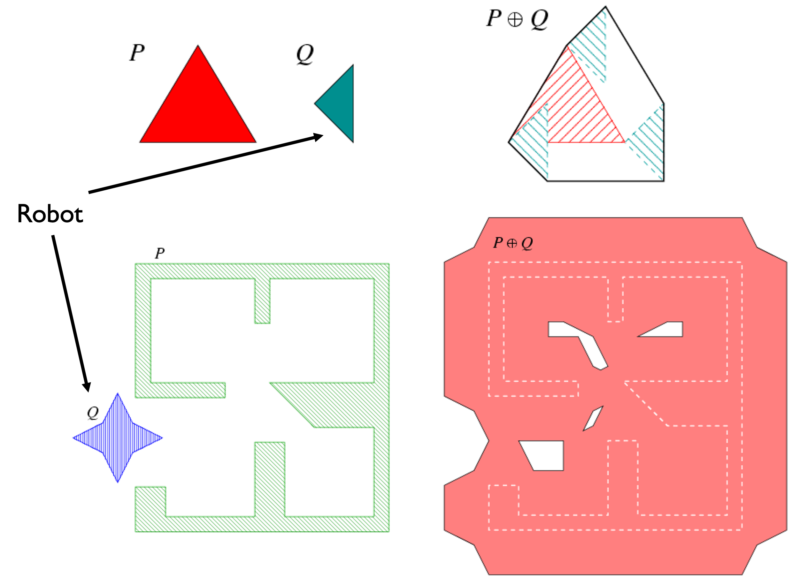
Drawbacks of grid-based planners
Grid-based planning works well for grids of up to 3-4 dimensions
State-space discretization suffers from combinatorial explosion:
If the state is \(x = [x_1, ... , x_D]\) and we split each dimension into N bins then we will have \(N^D\) nodes in the graph.
This is not practical for planning paths for robot arms with multiple joints, or other high-dimensional systems.
Sampling the state-space
Need to find ways to reduce the continuous domain into a sparse representation: graphs, trees etc.
Today:
Rapidly-exploring Random Tree (RRT),
Probabilistic RoadMap (PRM)
Visibility Planning
Smoothing Planned Paths
RRT
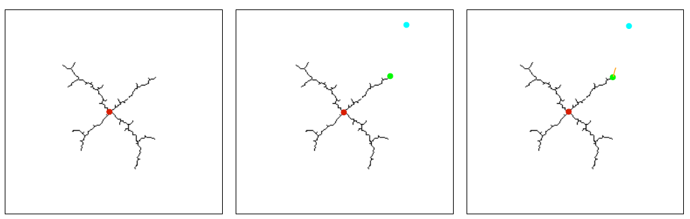Main idea: maintain a tree of reachable configurations from the root
Main steps:
- Sample random state
- Find the closest state (node) already in the tree
- Steer the closest node towards the random state
RRT
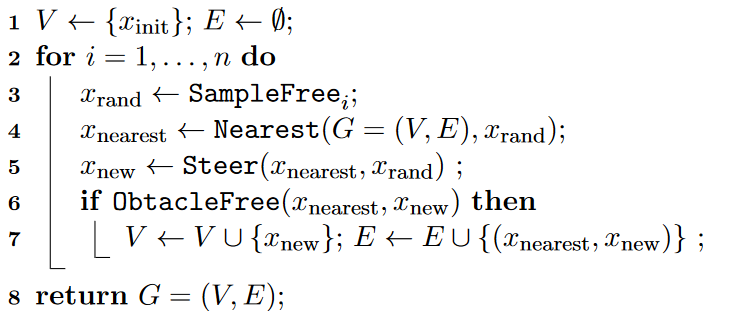RRT
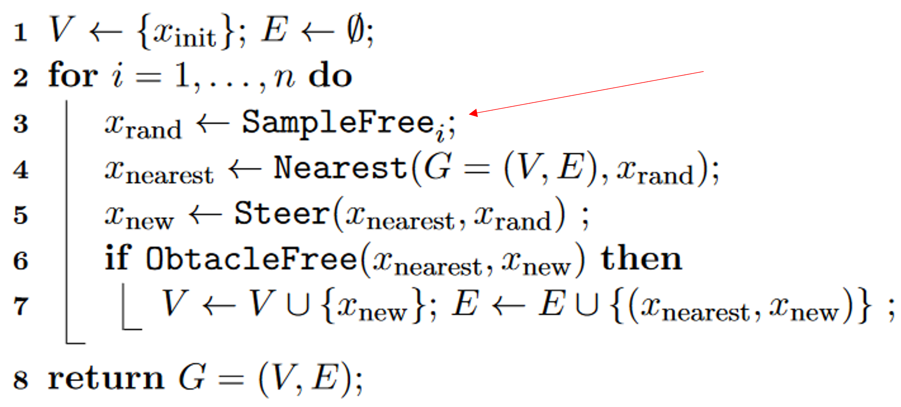
Things to pay attention to:
SampleFree() needs to sample
a random state from the
uniform distribution. How do
you sample rotations uniformly?
RRT

Things to pay attention to:
Nearest() searches for the nearest
neighbor of a given vector. Brute
force search examines |V| nodes
(increasing). Is there a more
efficient method?
RRT
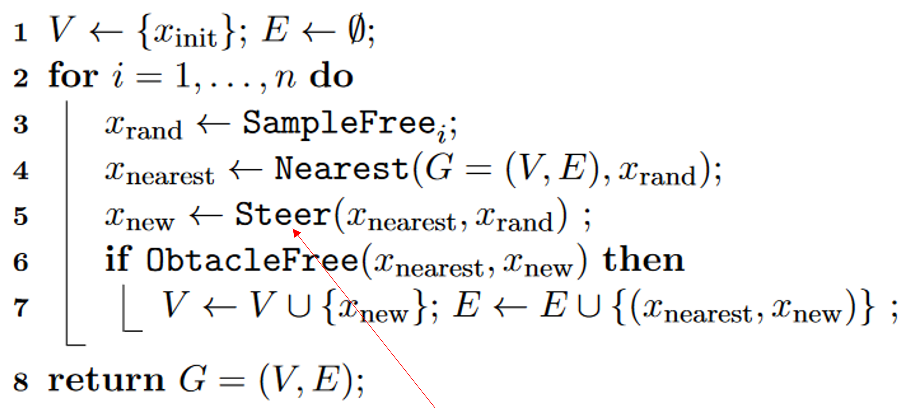
Things to pay attention to:
Steer() finds the controls that take the nearest state
to the new state. Easy for omnidirectional robots. What
about non-holonomic systems?
RRT
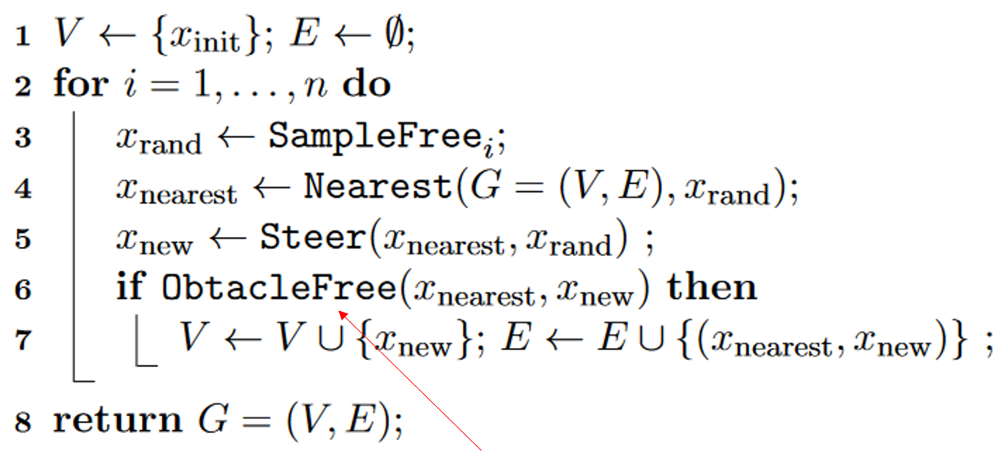
Things to pay attention to:
ObstacleFree() checks the path from the
nearest state to the new state for collisions.
How do you do collision checks?
RRT
Things to pay attention to:
Upside of using ObstacleFree(): you don’t need to model
obstacles in Steer(). For example, if Steer() computes LQR
controllers you don’t need to model obstacles in the control
computation.
RRT: uniform sampling
Only tricky case is when the state contains rotation components
For example: \(x = [_B^Wq ^Wp_{W B}]\)
State involving both rotation and translation components is often called the pose of the system.
Idea #1: Uniformly sample 3 Euler angles (roll, pitch, yaw)
3D rotation visualization:
rotation axis is a point on a sphere,
rotation angle is the direction
of the red arrow
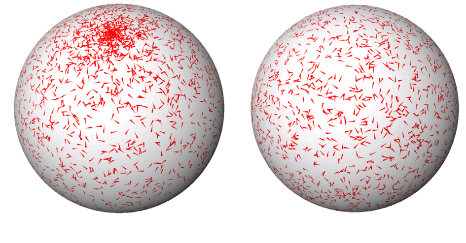
Idea #1
Not uniform after all
Correct, uniform
RRT: uniform sampling
Only tricky case is when the state contains rotation components
For example: \(x = [_B^Wq ^Wp_{W B}]\)
State involving both rotation and translation components is often called the pose of the system.
Idea #1: Uniformly sample 3 Euler angles (roll, pitch, yaw)
Nonuniformity at the north pole
caused by Gimbal Lock: same rotation
parameterized by different Euler angles
Idea #1
Not uniform after all
Correct, uniform
RRT: uniform sampling
- Idea #2: Uniformly sample a quaternion
- First, uniformly sample \(u_1, u_2, u_3 \in [0,1]\)
- Then output the unit quaternion
\[ \mathbf{q} = [\sqrt{1 - u_1}\sin(2\pi u_2), \sqrt{1 - u_1}\cos(2\pi u_2), \sqrt{u_1}\sin(2\pi u_3), \sqrt{u_1}\cos(2\pi u_3)] \]
- Idea #3: Uniformly sample rotation matrices.
- It’s possible but we won’t discuss it here.
RRT: finding the nearest neighbor
- Any alternatives to linear (brute force) search?
- Idea #1: space partitioning, e.g. kd-trees

Each split is done along the median of the
points on that region
Balanced kd-tree:
Can query in O(logn)
RRT: finding the nearest neighbor
- Any alternatives to linear (brute force) search?
- Idea #1: space partitioning, e.g. kd-trees
- Idea #2: locality-sensitive hashing
- Maintains buckets
- Similar points are placed on the same bucket
- When searching consider only points that map to the same bucket
RRT: steering to a given state
This is an optimal control problem, but without a specified time constraint
For omnidirectional systems we can connect states by a straight line.
For more complicated systems you could use LQR.
You could also use a large set of predefined controls, one of which could be able to take the system close to the given state
RRT: steering to a given state
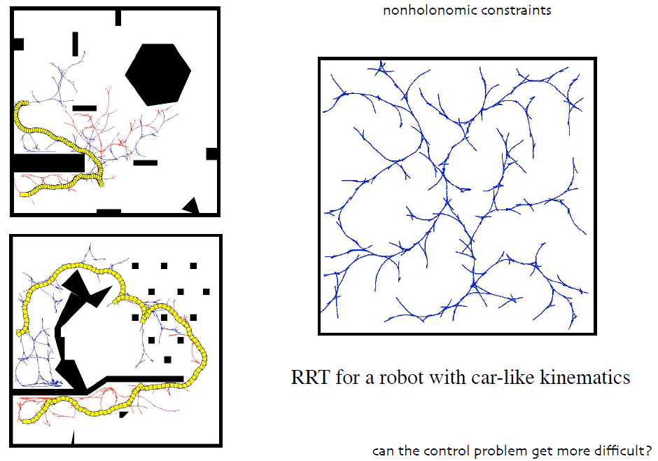RRT: collision detection
- Main idea: bounding volume collision detection
Source: https://www.toptal.com/game/video-game-physics-part-ii-collision-detection-for-solid-objects
RRT example: moving a piano
RRT: properties of the planning algorithm
#1: The RRT will eventually cover the space, i.e. it is a space-filling tree
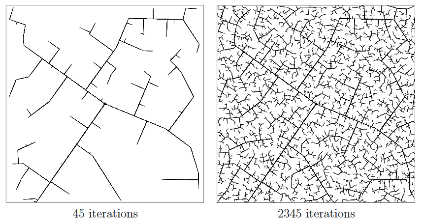Source: Planning Algorithms, Lavalle
RRT: properties of the planning algorithm
#1: The RRT will eventually cover the space, i.e. it is a space-filling tree
#2: The RRT will NOT compute the optimal path asymptotically
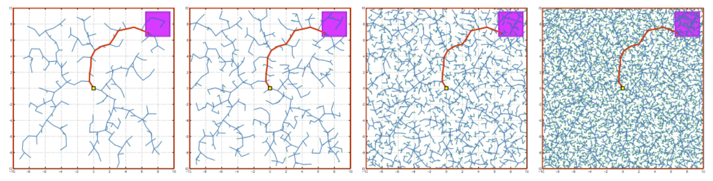Source: Karaman, Frazzoli, 2010
This problem has been addressed in recent years by RRT*, BIT*, Fast-Marching Trees
RRT: properties of the planning algorithm
#1: The RRT will eventually cover the space, i.e. it is a space-filling tree
#2: The RRT will NOT compute the optimal path asymptotically
#3: The RRT will exhibit “Voronoi bias,” i.e. new nodes will fall in free regions of Voronoi diagram (cells consist of points that are closest to a node)
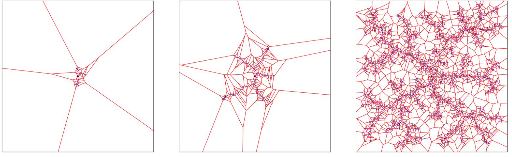Voronoi diagram
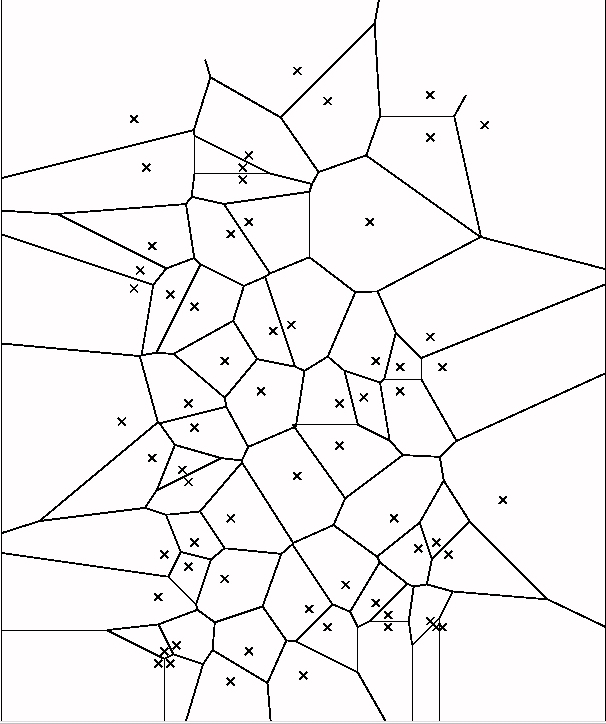RRT: properties of the planning algorithm
#1: The RRT will eventually cover the space, i.e. it is a space-filling tree
#2: The RRT will NOT compute the optimal path asymptotically
#3: The RRT will exhibit “Voronoi bias,” i.e. new nodes will fall in free regions of Voronoi diagram
#4: The probability of RRT finding a path increases exponentially in the number of iterations
#5: The distribution of RRT’s nodes is the same as the distribution used in SampleFree()
RRT variants: bidirectional search
Probabilistic RoadMaps (PRMs)
RRTs were good for single-query path planning
You need to re-plan from scratch for every query A -> B
PRM addresses this problem
It is good for multi-query path planning
PRM
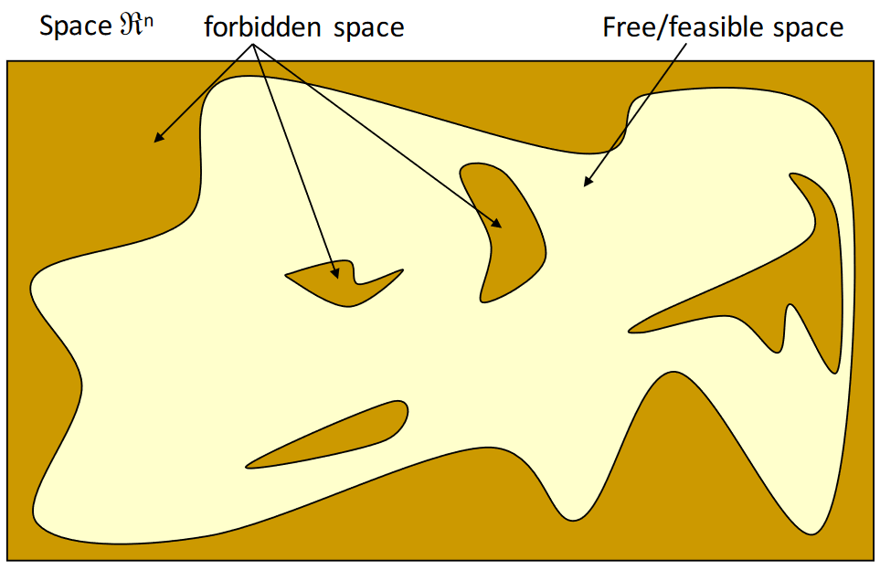
PRM
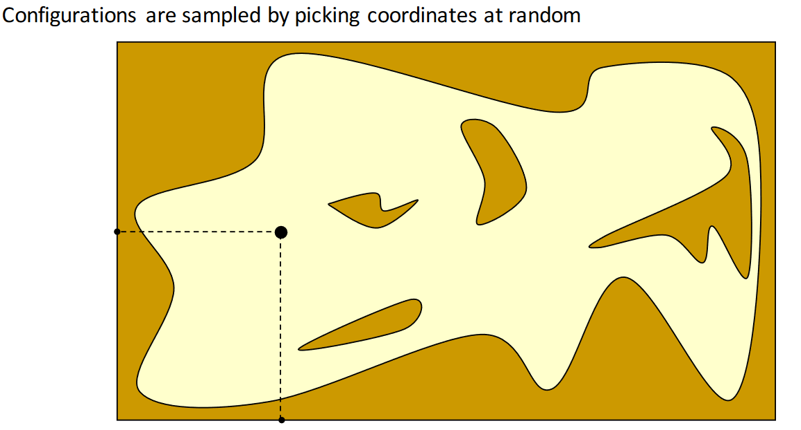
PRM
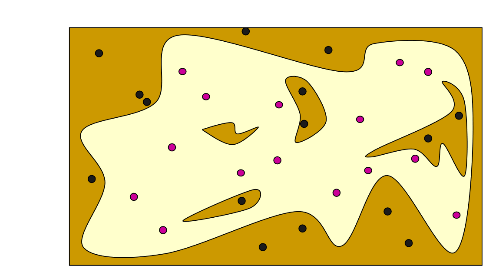
PRM
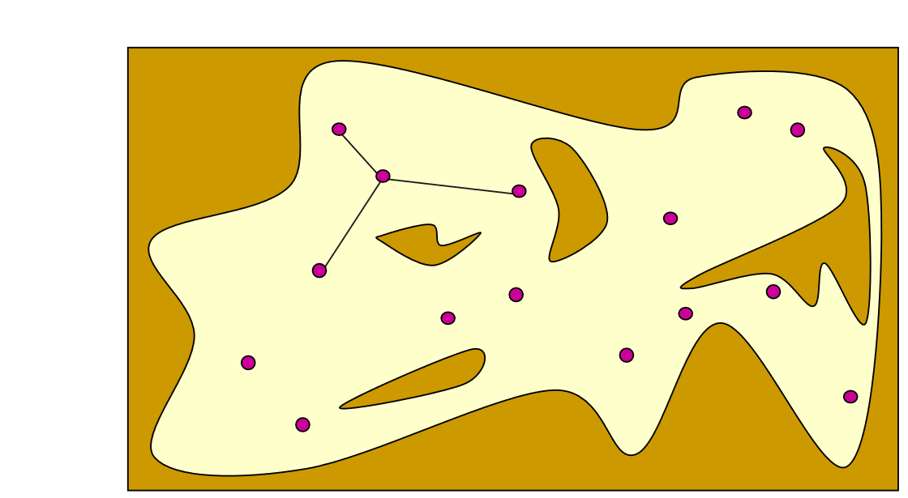
PRM
In the offline PRM
construction phase we
maintain a matrix
D[i, j] which contains the
total distance of the
shortest path from node i
to node j.
We can do this with an
all pairs shortest paths
algorithm and then
incrementally update D
as new nodes are added.
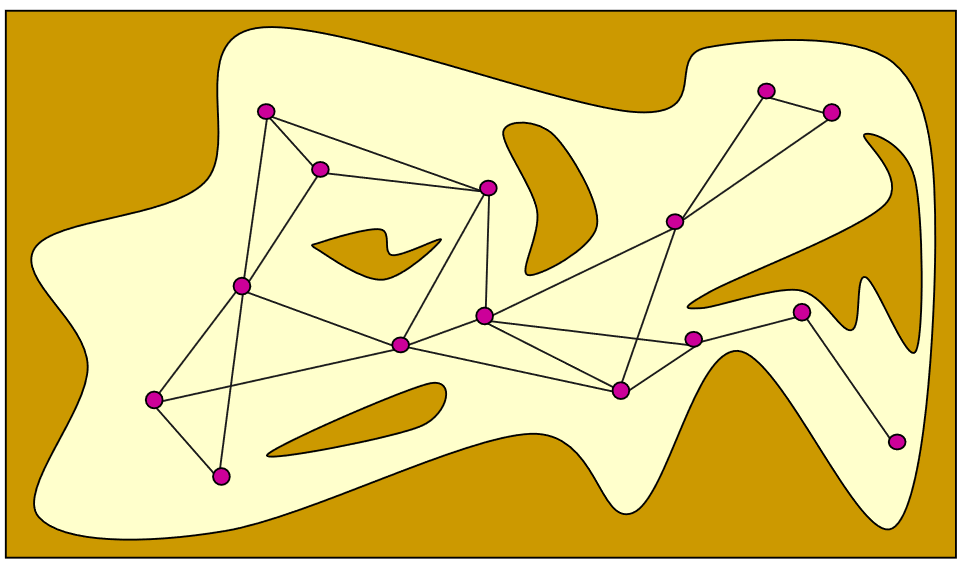
PRM
In the online PRM
query phase we
are given two endpoints
(not vertices of the graph)
and we want to find the
shortest path between them,
by making use of the matrix
D[i, j] that was precomputed
in the offline phase.
We can incorporate the
endpoints in the graph and
add 1 row and 1 column
to D

PRM
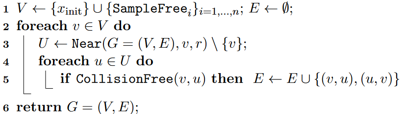
To perform a query (A->B) we need to connect A and B to the PRM.
We can do this by nearest neighbor search (kd-trees, hashing etc.)
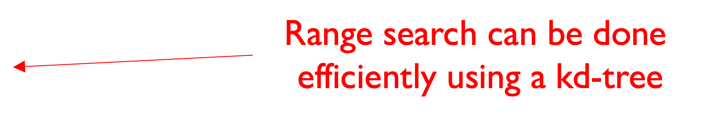
Visibility Graph Path Planning
- First, draw lines of sight from the start and goal to all ’visible” vertices and corners of the world.
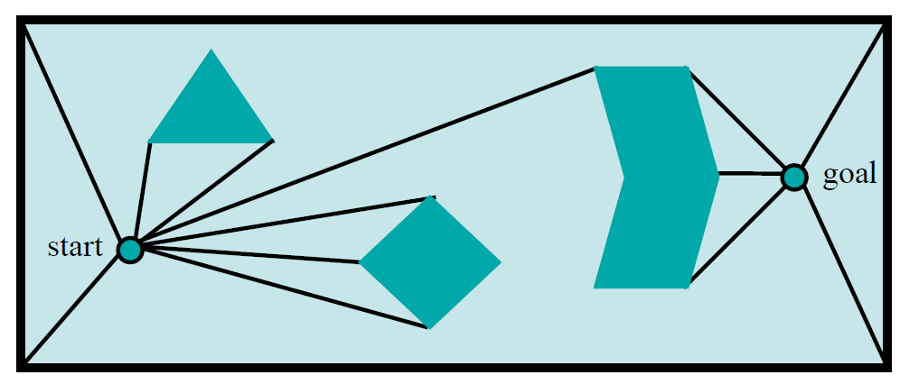
Visibility Graph Path Planning
- Second, draw lines of sight from every vertex of every obstacle like before. Remember lines along edges are also lines of sight.
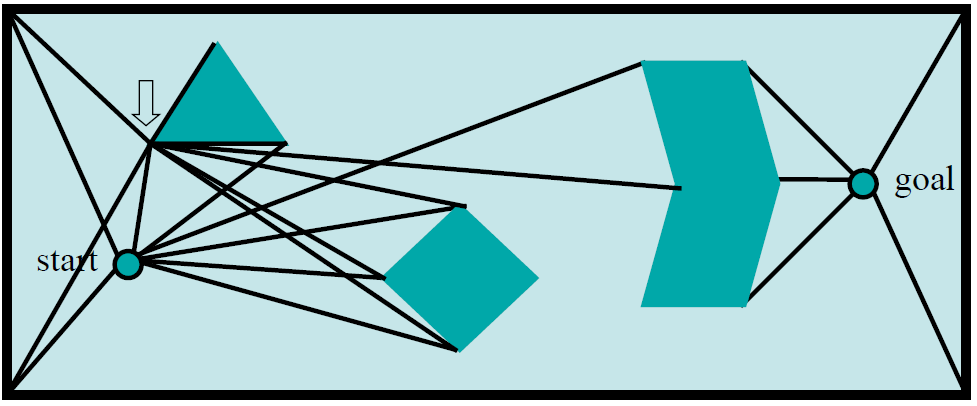
Visibility Graph Path Planning
- Second, draw lines of sight from every vertex of every obstacle like before. Remember lines along edges are also lines of sight.
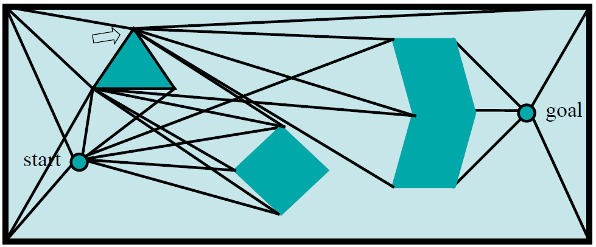
Visibility Graph Path Planning
- Repeat until you’re done.
Visibility graph
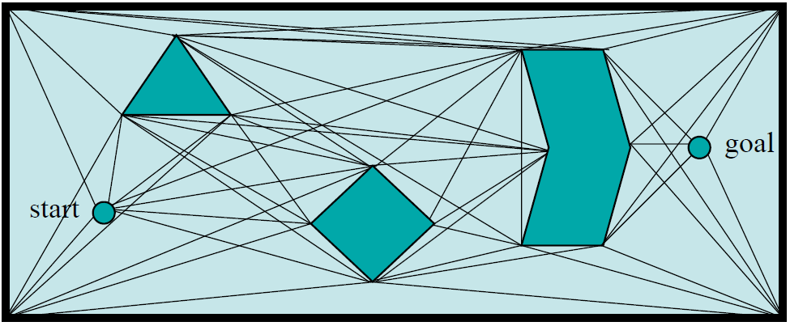
Can use graph search on visibility graph to find shortest path
Visibility Graph Path Planning
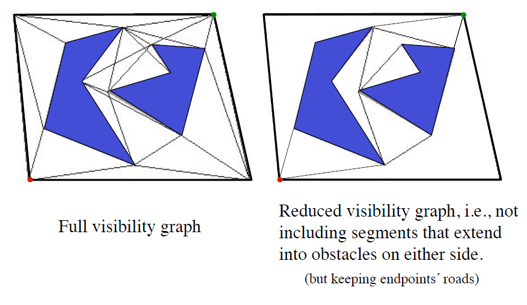
Potential problem:
shortest path touches
obstacle corners. Need
to dilate obstacles.
Visibility Graph Path Planning
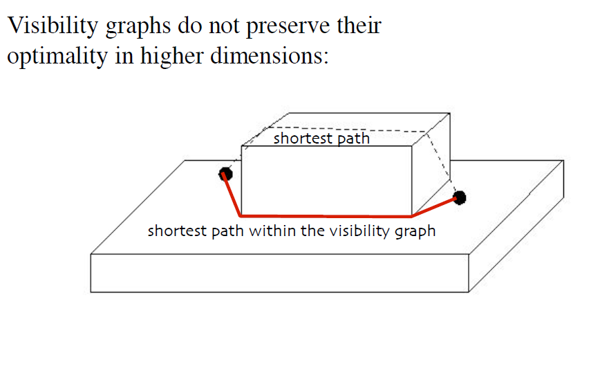Path smoothing
Plans obtained from any of these planners are not going to be smooth
A plan is a sequence of states: \(\pi = (\mathbf{x}_{\text{src}}, \mathbf{x}_1, \mathbf{x}_2, \ldots, \mathbf{x}_N, \mathbf{x}_{\text{dest}})\)
We can get a smoother path \(\text{smooth}(\pi) = (\mathbf{x}_{\text{src}}, \mathbf{y}_1, \mathbf{y}_2, \ldots, \mathbf{y}_N, \mathbf{x}_{\text{dest}})\) by minimizing the following cost function
\[ f(\mathbf{y}_1, \ldots, \mathbf{y}_N) = \sum_{t=1}^{N} ||\mathbf{y}_t - \mathbf{x}_t||^2 + \alpha \sum_{t=1}^{N} ||\mathbf{y}_t - \mathbf{y}_{t-1}||^2 \]
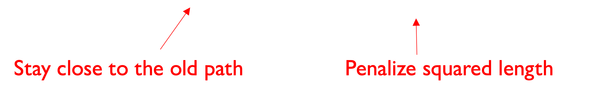
- May need to stop smoothing when smooth path comes close to obstacles.